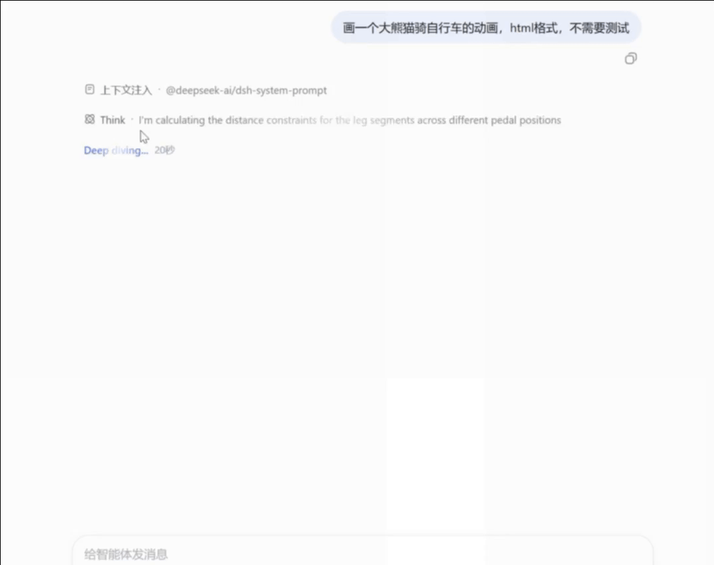
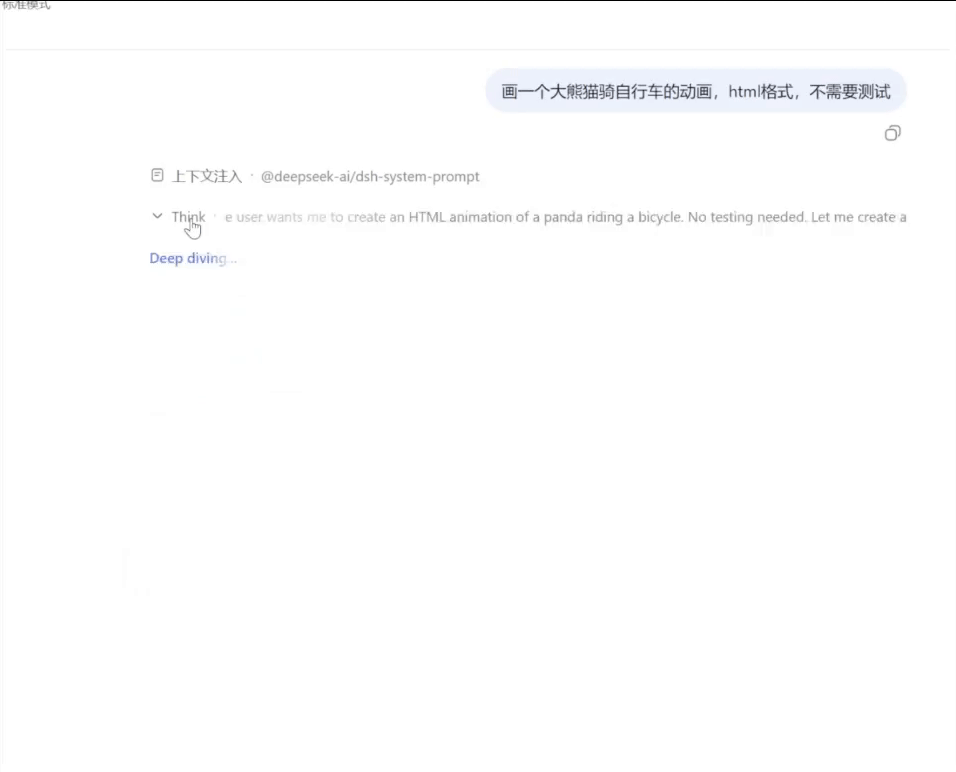

8 月灰测大概率指向 Opus 5
围绕 antml 标签的过滤机制、输入 Token 计量异常、截断边界及大小写无关性，多项物理规则共同锁定 Claude 风格请求处理链。至于时事知识、流式传输形态和安全拒答行为仅作为辅助证据。需要说明的是，现有公开材料尚无法百分之百锁定特定版本号，亦无法分辨其究竟是官方直连 API、第三方中转还是其他托管服务。
archive.dht / static evidence review
我们将社区讨论中的接口字段、统计图表、同会话差异比对、可复现的输入规则及原始 Session 抓包，系统性地串联为一条完整的证据链。现有所有客观材料均高度指向：7 月与 8 月灰测并非同一模型路径；8 月流量强指向 Claude 请求链，且极大概率是 Opus 5。
前端生成任务可作为有限的能力对照：在目前的外部公开样本中，标注为 Opus 5 的前端表现整体优于 Fable 对照组；但这仅能作为能力上限与候选排序的参考，无法单独作为锁定具体型号的直接铁证。
先明确核心确定性结论，再划定证据尚未覆盖的边界。
围绕 antml 标签的过滤机制、输入 Token 计量异常、截断边界及大小写无关性，多项物理规则共同锁定 Claude 风格请求处理链。至于时事知识、流式传输形态和安全拒答行为仅作为辅助证据。需要说明的是，现有公开材料尚无法百分之百锁定特定版本号，亦无法分辨其究竟是官方直连 API、第三方中转还是其他托管服务。
本报告基于系统级客观指标识别路由链路切换，而非主观猜测模型文风。
在稳定的灰测会话中，最显著的特征是系统先完成内部推理，再将思维链摘要以较大 Chunk 分段吐出。这与公开版"逐 Token 实时流式输出"的时序和分包形态有着本质区别。
当触发高危安全规则（如生物危害提问）时，系统并非直接报错中断，而是经历显著拉长的首字延迟（TTFT），随后切换为 DeepSeek 标志性的逐 Token 流式思维链；且该会话在此之后彻底脱离灰测，符合向 0813 V4 Pro 正式版的回退逻辑。
如果公开版 DeepSeek 在历史上下文中已经接触到示例输出、特定角色设定或异常 Token，它会自然顺应上下文进行模仿。这种"上下文被污染后的复现"不具备独立鉴别力。同理，后续单次交互未能复现安全拦截，也不能推翻之前的路由记录。
证据准则：关键实验均保留有完整录屏或原始 Session 数据备查。任何支持或反对的论点，必须附带可供交叉验证的截图或日志，空口无凭者一律不予采纳。更高级别的反证需包含完整时间线、请求抓包或无剪辑视频。
提交正反证据切忌混淆不同阶段的测试数据。8 月部分讨论可能引用了 7 月抓取的历史日志，缓存异常与底层聚类特征仅适用于 7 月阶段。
核心表现为固定的 64-Token 缓存截断重算、Reasoning Token 二次计数、TTFT-缓存-生成速率联合聚类，以及 logprobs 和 system_fingerprint 的底层差异。
尝试在公开正式版中反向复现异常 Token、自主思考及特定输出特征。测试显示大量特征均无法稳定重现，证实公开正式版并未直接沿用 7 月旧灰测链路。
前期暴露的假缓存数据已被修复。核心特征转变为 antml 相关的确定性解析规则、Session 维度的路由保持、大块摘要输出，以及高危生物提问触发的 Fallback 降级。
每个节点仅承载其能直接证明的狭义结论，最终的型号推论建立在多节点的交叉印证之上。
antml 复现官方 Anthropic API 的确定性输入预处理这里的“系统”不是模型权重，而是官方 Anthropic API 在模型分词前执行的标签预处理。灰测请求逐项复现了它最不自然的边界：只循环剥离开头的 antml:，遇到第一个不匹配前缀立即停手，后面的 antml: 不再处理；并且大小写不敏感。
看这一条输入如何穿过官方 Anthropic API 的预处理规则：
antml 五个字母共有 2⁵ = 32 种大小写排列，在常规 Tokenizer 中会对应不同的 Token 组合，却稳定触发同一种大小写无关规则。要用蒸馏解释，就必须额外假设训练数据定向覆盖了这套隐藏行为。antml:，遇到第一个非匹配前缀立即停止，停止后再出现的 antml: 原样保留。这是确定性词法状态机的边界，而不是概率生成中偶然漏掉字符串。无论在输入中叠加多少个 antml:，
Anthropic 官方 API 返回的 input Token 数都一致。
64 Token 一块，是 DeepSeek 的正常机制。异常只看一件事：上下文刚加入数万 Token 的全新内容，未命中却仍然小于 64。下面直接看一个真实回合。
上一回合刚生成一份完整的 game.js。到下一次请求，它第一次作为历史消息进入上下文；usage 却声称未命中只有 42 Token。
{
"total": 96861,
"input": 42,
"output": 74,
"reasoning": 1897,
"cache": {
"write": 0,
"read": 94848
}
}▲ 页面所称“未命中”就是这里的 input: 42
1'use strict';
2/* ==================================
3 逆转法庭 ～午夜的钟声～
NDS 风格网页游戏 · 原创剧本
全部图形为程序化像素绘制
...
function renderTop() { ... }
function renderBtm() { ... }
const Script = [ ... ];
const CrossExams = { ... };
...
2025document.addEventListener('keydown',
2026 tryTitleMusic, { once: false });
2027
2028loop();这不是用户只发了一个“继续”。这是上轮返回的完整 assistant message，其中仅代码就有 86,699 个字符；下一轮必须携带它才能继续会话。
cache.read 恰好增加 41,792 = 653 × 64。新内容的整块部分也被整体划进了“命中”。同样是模型开始写前端代码前的思考文本，灰测路径表现为高速突发输出，中间反复停顿；V4 正式公开版则是均匀、连续的较高速流式输出。点击播放，直接观察差异。
观察重点：左边看“突然出现一大段 → 长时间停住 → 再突然出现”；右边看持续匀速增长。
先记住两个同时成立的事实：
在稳定灰测会话中输入高危生物安全问题后，系统的输出模式突变为 DeepSeek 逐 Token 流式思维链，ANTML 前缀也不再被过滤，且该会话自此彻底脱离灰测。整个过程中 provider/model 响应头保持不变，底层时序与分块机制却已完全倒换。
数据呈现明显的双峰分布：低延迟组生成速率约 200 字/秒且缓存数据正常；高延迟组生成速率约 80 字/秒且伴随假缓存。该证据的决定性在于延迟、缓存与生成速率三个独立维度同步分组，排除了单纯的"服务器排队"假象。
常规请求可正常返回 logprobs 概率，而灰测请求该字段始终为空；system_fingerprint 初期与公开版有明显差异，后被人工统一为 V4P；流式传输时的分包与中文断句边界也展现出完全不同的封装特征。
灰测模型展现出跨越至 2025 年 6 月乃至 10 月的知识切片，并在特定政界冷门考题中直接给出了 José Jerí 等最新信息。测试者本人亦明确指出"仅凭知识库无法定死型号"。
在无历史记录的干净会话中，V4 Pro 正式版无法稳定通过全部异常 Token，多次测试均未出现正文固定输出，简单提问也不会像旧灰测那样跳过思考环节。被历史上下文引导后的"顺应模仿"，不能作为有效反证。
7 月核心特征是缓存截断重算、Reasoning Token 映射与基础设施聚类；8 月则转为 Claude 风格输入预处理与安全降级机制。两轮特征在多个技术维度上发生系统性断裂。
在同一用户账号、同一时间节点下，原灰测 Session 继续对话仍能保持灰测；将其 Fork 成新会话后，新分支则落入公开版 DeepSeek 路径。这个现象与“灰测资格保存在 Session 上”相容，但并不具有强鉴别力。
按实验测试簇分类归档，完整展示可供复核的原始材料。点击任意图片可查看高清大图。
TTFT 只是切入点，与缓存合法性及生成速率构成的三维联合聚类才是核心证据。


antml 确定性规则由主测试用例、DeepSeek 对照组、Token 计量差异、首错截断边界、大小写无关性及多方独立复现共同构成的完整逻辑闭环。


摘要块式、逐 Token 流式、分词边界及同会话状态切换构成了完整的链路证据。


干净对照证明公开版未继承 7 月特征；污染对照证明模型在上下文被诱导后会顺应模仿，该现象不能作为反证。


用于缩小模型候选集，不单独承担排除 Fable 5 或直接敲定 Opus 5 的证明任务。


严格按照"证据在物理层面上能直接证明什么"进行评级，杜绝推论升级。
| 置信度 | 时间线 | 核心证据 | 直接证明的结论 | 主要边界与局限 |
|---|---|---|---|---|
| 高 | 8 月 | antml 过滤、Token、截断、大小写无关 | 复现官方 Anthropic API 的输入预处理边界，强指向 Claude 请求链 | 第三方理论上可主动复刻；无法证明官方直连或具体型号 |
| 高 | 7 月 | 固定 64-Token 缓存重算 | usage/cache 字段经过人为重写，处理链不同 | 仅适用于 7 月，无法据此命名上游 |
| 中高 | 跨路径对照 | 灰测突发停顿与 V4 均匀流式现场演示 | 两条路径具有肉眼可见的不同输出时序与缓冲方式 | 演示按观察重建，不等同于原始 SSE 抓包 |
| 中高 | 7 月 | Reasoning Token 精确映射与摘要式分块输出 | 计数、速度差与分块模式形成两难，usage 按可见摘要重算 | 三项须结合使用，单项无法反推真实推理源头 |
| 高 | 8 月 | 高危安全提问后突变流式并脱落灰测 | 上游熔断后降级回退至 0813 V4 Pro 正式版 | 安全拦截受具体 Prompt 风险等级调节 |
| 高 | 7 月 | TTFT、缓存、速率三维聚类 | 底层存在至少两套物理推理链路或基础设施 | 聚类统计无法直接反推模型版本号 |
| 中高 | 7 月 | logprobs、fingerprint、delta 差异 | 底层 API 接口能力、配置参数或封装存在差异 | 网关代理层具备人为覆写这些字段的能力 |
| 中 | 8 月 | 2025 年时事知识与冷门政界考题 | 仅能作为收窄模型候选范围的辅助参考 | 受联网检索、RAG 外挂与后训练知识影响极大 |
| 中 | 正式版对照 | 空白会话下脏 Token 与免思考无法稳定复现 | 公开正式版并未直接沿用 7 月旧灰测链路 | 上下文被引导后的顺应模仿不构成有效反例 |
| 中高 | 跨期对比 | 多个独立技术维度发生系统性断裂 | 7 月与 8 月绝非同一模型链路 | 两轮测试的具体底层版本号均未被直接证明 |
| 低 | 8 月 | Fork 新会话脱落灰测，原 Session 维持 | 新会话创建时可能重新决定灰测路由 | 正常灰度发布也可出现，不具备模型鉴别力 |
| 中低 | 全周期 | 模型自述、行文文风、标点偏好、猜数字 | 仅作为行为相似性的背景观察 | 易受 Prompt 注入与微调影响，不入核心证据链 |
划定边界不是削弱证据的说服力，而是防止将局部事实过度解读为绝对结论。
antml 规则仅证明流量经过了 Claude 风格的处理管线：第三方中转层或反代兼容层同样有能力人工实现这套规则，不能直接等同于官方直连。本报告基于本地 archive.dht 完整镜像。对社区核心讨论线程（包括 N一串 的 211 条发言及楼主的 237 条核心消息）进行了逐项推演与交叉验证，并补入了测试者 mitu9527 提交的独立 antml 复现日志、生物安全 Fallback 降级记录与原始会话抓包数据。
为保证论证的严肃性与专注度，本页仅精简收录核心证据链相关材料，剥离了非技术性的外部跳转。绝大多数关键实验均留存有完整的录屏及会话原始文件备查。
下载灰测原始会话 Session ZIP · 下载生物安全 fallback 原始 Session ZIP · 提交证据或评论
两段 GIF 使用同一条“大熊猫骑自行车”任务；请直接观察文字增长方式和停顿位置。

